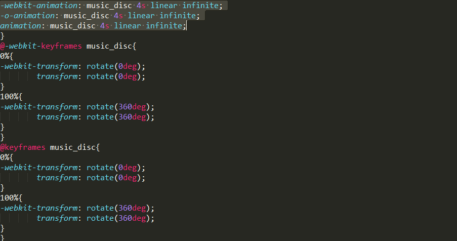

在学写贺卡时的一些问题和学到的一些东西
- 作为一个移动端的Demo首先要考虑到手机屏幕自适应的问题，还有视口问题。在head中有个meta标签，可以帮助到我们。
meta name="viewport" content="width=device-width, user-scalable=no, initial-scale=1.0, maximum-scale=1.0, minimum-scale=1.0"
这样的一串代码就可以解决Dmeo在显示中出现的一些手机屏幕与显示的长于宽不一样的问题了。
首先 name="viewport" 这是meta标签用于的name 作用于viewport（视口）。
content是控制属性，后面跟它控制的属性。width=device-width（宽度等于设备宽度）。
initial-scale=1.0, maximum-scale=1.0, minimum-scale=1.0（分别是：初始缩放为1，最小和最大缩放也为1）这样就可以避免两根手指在移动设备端放大或缩小Demo造成一些不必要的问题。
user-scalable（用户缩放）属性的值有两个：yes或no 。当值为yes时，用户可以缩放，反之不能。
除了视口问题还有个就是在iPhone设备上看这个Dome是有可能iPhone设备会将里面的一些数字例如2016作为一个超链接对待出先一个“是否拨打2016”的连接，这个问题也需要解决。
meta name="format-detection" content="telephone=no" format-detection（格式探索） telephone属性也有yes和no两个值当值为yes时，会出现所说的问题，将值设为no是可解决这个问题。
还有个在不同的浏览器上渲染也会有不同的结果，所以我们可以加上 meta http-equiv="X-UA-Compatible" content="IE=edge,chrome=1" 这串代码，可以强制让浏览器使用webkit内核来渲染该Demo。当使用IE浏览器时默认用最高的IE11来渲染，这样避免不能识别html5里的一些标签和css3格式。
-
我们在写这个的时候应该考虑到兼容性的问题，通常在前面加入前缀，在这里面的一些代码也体现了这点，例如：
-webkit-animation: music_disc 4s linear infinite;
-o-animation: music_disc 4s linear infinite;
animation: music_disc 4s linear infinite;
“-webkit- 支持 Chrome和safari浏览器”
“ -o- 支持 Opear浏览器”
“ -moz- 支持 Firefox 浏览器”
“ -ms- 支持 IE浏览器”
-
这里有一些css3动画效果的属性：
这样是一个旋转效果，可以是块状元素进行旋转，还可以控制旋转速度。